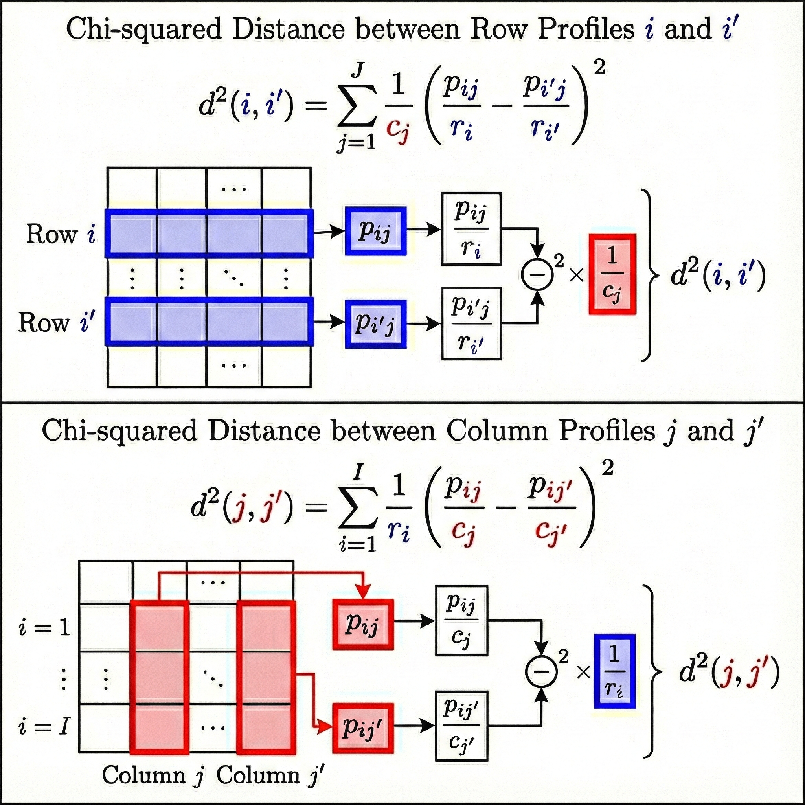
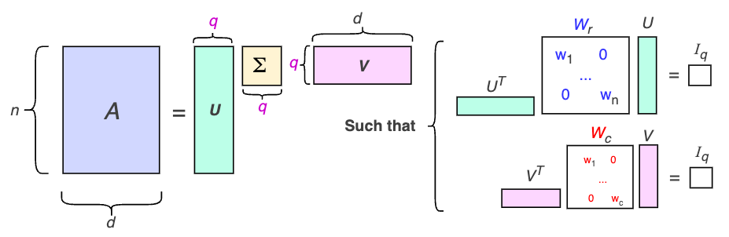

| age | workclass | education | marital.status | occupation | relationship | |
|---|---|---|---|---|---|---|
| 0 | 90 | ? | HS-grad | Widowed | ? | Not-in-family |
| 1 | 82 | Private | HS-grad | Widowed | Exec-managerial | Not-in-family |
IX. Correspondence Analysis (CA)
Exploratory Data Analysis & Unsupervised Learning


Lecturer: Dr. HAS Sothea
..Instructor: Ms. UANN Sreyvi
..Instructor: Ms. UANN Sreyvi
1 Motivation
1.1 Motivation
UCI Adult dataset
- The dataset was extracted from the 1994 Census bureau database by Ronny Kohavi and Barry Becker.
- Dimension: (32561, 15), and some columns are shown below:
- Can you spot any problem in the above table?
- Would
educationbe related tooccupation? - How about
marital.statusandworkclass?
UCI Adult dataset
- Challenge when dealing with categorical data:
- How to visualize category-to-category relationship between two or more categorical variables?
- How to reduce the dimension of categorical data?
- How to cluster categorical data?
- After rejecting the null hypothesis of independency in \(\chi^2\)-test, one may be interested in exploring the association between the considered categorical variables.
- Correspondence Analysis (CA) is a powerful Data Analysis technique to address these challenges.
- It can be considered as the counterpart of PCA for cat. data.
2 Categorical chi-squared Test
2.1 Categorical chi-squared Test
Contingency Table
- Two-way contingency table:
workclass&marital.status:
| marital.status | Divorced | Married-civ-spouse | Married-spouse-absent | Never-married | Separated | Widowed |
|---|---|---|---|---|---|---|
| workclass | ||||||
| Federal-gov | 168 | 471 | 11 | 245 | 26 | 36 |
| Local-gov | 369 | 1023 | 22 | 530 | 63 | 86 |
| Private | 3119 | 9732 | 302 | 8186 | 754 | 588 |
| Self-emp-inc | 100 | 837 | 5 | 125 | 20 | 29 |
| Self-emp-not-inc | 292 | 1680 | 31 | 409 | 53 | 74 |
| State-gov | 210 | 588 | 17 | 413 | 43 | 26 |
Chi-squared Test of Independence
Chi-square val: 1091.7196.
P-value: 0.0000.- As the p-value is very small, we reject the null hypothesis of independence (be careful).
- Next, we shall to explore the association between these two categorical variables.
- Bivariate plot may be used.
Code
import plotly.express as px
df_freq = data_clean.groupby(['workclass', 'marital.status']).size().reset_index(name='Freq')
df_freq['percent'] = df_freq.groupby('workclass')['Freq'].apply(lambda x: x/x.sum() * 100).reset_index(level=0, drop=True)
fig = px.bar(
df_freq,
x="workclass",
y="percent",
color="marital.status",
barmode='stack',
text= df_freq['percent'].round(2).astype(str) + '%')
fig.update_layout(width=480, height=450,
title='Stacked Barplot of `Workclass` vs `Marital Status`',
xaxis_title='Workclass',
yaxis_title='Percentage (%)',
legend_title='Marital Status')
fig.update_traces(textposition='inside')
fig.show()Chi-squared Test of Independence
- The bivariate plot may not clearly show the association between categories.
- It only shows the (overview) conditional distribution of one variable given the other.
- CA offers a complete picture of the association between the two variables.
3 Chi-squared distance in detail
3.1 Chi-squared distance in detail
Contingency Table of Proportions
- Let \(\color{blue}{X}\) & \(\color{red}{Y}\) be two cat. variables with \(\color{blue}{I}\) and \(\color{red}{J}\) categories resp.
- The contingency table of proportion \(P = (p_{ij})\) is given by:
\[P=\begin{array}{|c|cccc|c|} \color{blue}{X} \setminus \color{red}{Y} & \color{red}{Y_1} & \color{red}{Y_2} & \dots & \color{red}{Y_J} & \color{blue}{\text{r}} \\ \hline \color{blue}{X_1} & p_{11} & p_{12} & \dots & p_{1J} & \color{blue}{r_1} \\ \color{blue}{X_2} & p_{21} & p_{22} & \dots & p_{2J} & \color{blue}{r_2} \\ \vdots & \vdots & \vdots & \ddots & \vdots & \vdots \\ \color{blue}{X_I} & p_{I1} & p_{I2} & \dots & p_{IJ} & \color{blue}{r_I} \\ \hline \color{red}{\text{c}} & \color{red}{c_1} & \color{red}{c_2} & \dots & \color{red}{c_J} & 1 \end{array}\]
- \(N=\sum_{i,j}n_{ij}\): total observations.
- \(p_{ij} = n_{ij}/N\): prop. of cat. \((i,j)\).
- \(\color{blue}{r_i} = \sum_{j=1}^{J} p_{ij}\): row marginal prop.
- \(\color{red}{c_j} = \sum_{i=1}^{I} p_{ij}\): col. marginal prop.
- Row profile for row \(\color{blue}{i}\) is given by: \(\left(\frac{p_{\color{blue}{i}1}}{\color{blue}{r_i}},\frac{p_{\color{blue}{i}2}}{\color{blue}{r_i}}, \ldots, \frac{p_{\color{blue}{i}J}}{\color{blue}{r_i}}\right)\).
- Column profile for column \(\color{red}{j}\) is given by: \(\left(\frac{p_{1\color{red}{j}}}{\color{red}{c_j}}, \frac{p_{2\color{red}{j}}}{\color{red}{c_j}}, \ldots, \frac{p_{I\color{red}{j}}}{\color{red}{c_j}}\right)\).
Row profile: Prop. of cols in each row
- Row profile for row \(\color{blue}{i}\): \(\left(\frac{p_{\color{blue}{i}1}}{\color{blue}{r_i}},\frac{p_{\color{blue}{i}2}}{\color{blue}{r_i}}, \ldots, \frac{p_{\color{blue}{i}J}}{\color{blue}{r_i}}\right)\).
| marital.status | Divorced | Married-civ-spouse | Married-spouse-absent | Never-married | Separated | Widowed | Sum |
|---|---|---|---|---|---|---|---|
| workclass | |||||||
| Federal-gov | 0.176 | 0.492 | 0.011 | 0.256 | 0.027 | 0.038 | 1.0 |
| Local-gov | 0.176 | 0.489 | 0.011 | 0.253 | 0.030 | 0.041 | 1.0 |
| Private | 0.138 | 0.429 | 0.013 | 0.361 | 0.033 | 0.026 | 1.0 |
| Self-emp-inc | 0.090 | 0.750 | 0.004 | 0.112 | 0.018 | 0.026 | 1.0 |
| Self-emp-not-inc | 0.115 | 0.662 | 0.012 | 0.161 | 0.021 | 0.029 | 1.0 |
| State-gov | 0.162 | 0.453 | 0.013 | 0.318 | 0.033 | 0.020 | 1.0 |
- They are often compared to their mean row profile:
\(\color{red}{\text{c}=}\) [0.139, 0.467, 0.013, 0.323, 0.031, 0.027].
Column profile: Prop. of rows in each col.
- Column profile for column \(\color{red}{j}\): \(\left(\frac{p_{1\color{red}{j}}}{\color{red}{c_j}}, \frac{p_{2\color{red}{j}}}{\color{red}{c_j}}, \ldots, \frac{p_{I\color{red}{j}}}{\color{red}{c_j}}\right)\).
| marital.status | Divorced | Married-civ-spouse | Married-spouse-absent | Never-married | Separated | Widowed |
|---|---|---|---|---|---|---|
| workclass | ||||||
| Federal-gov | 0.039 | 0.033 | 0.028 | 0.025 | 0.027 | 0.043 |
| Local-gov | 0.087 | 0.071 | 0.057 | 0.053 | 0.066 | 0.103 |
| Private | 0.733 | 0.679 | 0.778 | 0.826 | 0.786 | 0.701 |
| Self-emp-inc | 0.023 | 0.058 | 0.013 | 0.013 | 0.021 | 0.035 |
| Self-emp-not-inc | 0.069 | 0.117 | 0.080 | 0.041 | 0.055 | 0.088 |
| State-gov | 0.049 | 0.041 | 0.044 | 0.042 | 0.045 | 0.031 |
| Sum | 1.000 | 1.000 | 1.000 | 1.000 | 1.000 | 1.000 |
- They are often compared to their mean column profile: \(\color{blue}{\text{r}=}\) [0.031, 0.068, 0.739, 0.036, 0.083, 0.042].
Definition of \(\chi^2\) distance
- The \(\chi^2\) distance between two row profiles \(\color{blue}{i}\) and \(\color{blue}{i'}\): \[d^2(\color{blue}{i}, \color{blue}{i'}) = \sum_{j=1}^{J} \frac{1}{\color{red}{c_j}}\left(\frac{p_{\color{blue}{i}j}}{\color{blue}{r_i}} - \frac{p_{\color{blue}{i'}j}}{\color{blue}{r_{i'}}}\right)^2 \]
- The \(\chi^2\) distance between two column profiles \(\color{red}{j}\) and \(\color{red}{j'}\): \[d^2(\color{red}{j}, \color{red}{j'}) = \sum_{i=1}^{I} \frac{1}{\color{blue}{r_i}}\left(\frac{p_{i\color{red}{j}}}{\color{red}{c_j}} - \frac{p_{i'\color{red}{j}}}{\color{red}{c_{j'}}}\right)^2\]

Definition of \(\chi^2\) distance
- The \(\chi^2\) distance between two profiles measures how different they are
weightedby the class rareness. - Intuition: a small difference in a
rare categoryis more significant than the same difference in a common category. - For example, consider \(\chi^2\)-distance of our
workclassrow profiles:
| workclass | Federal-gov | Local-gov | Private | Self-emp-inc | Self-emp-not-inc | State-gov |
|---|---|---|---|---|---|---|
| workclass | ||||||
| Federal-gov | 0.00 | 0.03 | 0.24 | 0.52 | 0.35 | 0.17 |
| Local-gov | 0.03 | 0.00 | 0.25 | 0.53 | 0.35 | 0.19 |
| Private | 0.24 | 0.25 | 0.00 | 0.67 | 0.50 | 0.11 |
| Self-emp-inc | 0.52 | 0.53 | 0.67 | 0.00 | 0.18 | 0.61 |
| Self-emp-not-inc | 0.35 | 0.35 | 0.50 | 0.18 | 0.00 | 0.44 |
| State-gov | 0.17 | 0.19 | 0.11 | 0.61 | 0.44 | 0.00 |
Definition of \(\chi^2\) distance
- The \(\chi^2\) distance between two profiles measures how different they are
weightedby the class rareness. - Intuition: a small difference in a
rare categoryis more significant than the same difference in a common category. - For example, consider \(\chi^2\)-distance of our
workclassrow profiles:
| workclass | Federal-gov | Local-gov | Private | Self-emp-inc | Self-emp-not-inc | State-gov |
|---|---|---|---|---|---|---|
| workclass | ||||||
| Federal-gov | 0.00 | 0.03 | 0.24 | 0.52 | 0.35 | 0.17 |
| Local-gov | 0.03 | 0.00 | 0.25 | 0.53 | 0.35 | 0.19 |
| Private | 0.24 | 0.25 | 0.00 | 0.67 | 0.50 | 0.11 |
| Self-emp-inc | 0.52 | 0.53 | 0.67 | 0.00 | 0.18 | 0.61 |
| Self-emp-not-inc | 0.35 | 0.35 | 0.50 | 0.18 | 0.00 | 0.44 |
| State-gov | 0.17 | 0.19 | 0.11 | 0.61 | 0.44 | 0.00 |
- Here is the \(\chi^2\) distance matrix of
marital.statuscolumn profiles:
| marital.status | Divorced | Married-civ-spouse | Married-spouse-absent | Never-married | Separated | Widowed |
|---|---|---|---|---|---|---|
| marital.status | ||||||
| Divorced | 0.00 | 0.27 | 0.16 | 0.22 | 0.13 | 0.15 |
| Married-civ-spouse | 0.27 | 0.00 | 0.30 | 0.40 | 0.32 | 0.22 |
| Married-spouse-absent | 0.16 | 0.30 | 0.00 | 0.15 | 0.10 | 0.25 |
| Never-married | 0.22 | 0.40 | 0.15 | 0.00 | 0.09 | 0.33 |
| Separated | 0.13 | 0.32 | 0.10 | 0.09 | 0.00 | 0.25 |
| Widowed | 0.15 | 0.22 | 0.25 | 0.33 | 0.25 | 0.00 |
- Interpretation:
- Row profiles:
Federal-govandLocal-govare the most similar row profiles, i.e., the martial status distribution of people working in these two workclasses are quite similar.
- Row profiles:
Definition of \(\chi^2\) distance
- The \(\chi^2\) distance between two profiles measures how different they are
weightedby the class rareness. - Intuition: a small difference in a
rare categoryis more significant than the same difference in a common category. - For example, consider \(\chi^2\)-distance of our
workclassrow profiles:
| workclass | Federal-gov | Local-gov | Private | Self-emp-inc | Self-emp-not-inc | State-gov |
|---|---|---|---|---|---|---|
| workclass | ||||||
| Federal-gov | 0.00 | 0.03 | 0.24 | 0.52 | 0.35 | 0.17 |
| Local-gov | 0.03 | 0.00 | 0.25 | 0.53 | 0.35 | 0.19 |
| Private | 0.24 | 0.25 | 0.00 | 0.67 | 0.50 | 0.11 |
| Self-emp-inc | 0.52 | 0.53 | 0.67 | 0.00 | 0.18 | 0.61 |
| Self-emp-not-inc | 0.35 | 0.35 | 0.50 | 0.18 | 0.00 | 0.44 |
| State-gov | 0.17 | 0.19 | 0.11 | 0.61 | 0.44 | 0.00 |
- Here is the \(\chi^2\) distance matrix of
marital.statuscolumn profiles:
| marital.status | Divorced | Married-civ-spouse | Married-spouse-absent | Never-married | Separated | Widowed |
|---|---|---|---|---|---|---|
| marital.status | ||||||
| Divorced | 0.00 | 0.27 | 0.16 | 0.22 | 0.13 | 0.15 |
| Married-civ-spouse | 0.27 | 0.00 | 0.30 | 0.40 | 0.32 | 0.22 |
| Married-spouse-absent | 0.16 | 0.30 | 0.00 | 0.15 | 0.10 | 0.25 |
| Never-married | 0.22 | 0.40 | 0.15 | 0.00 | 0.09 | 0.33 |
| Separated | 0.13 | 0.32 | 0.10 | 0.09 | 0.00 | 0.25 |
| Widowed | 0.15 | 0.22 | 0.25 | 0.33 | 0.25 | 0.00 |
- Interpretation:
- Column profiles:
SeparatedandDivorcedare the most similar column profiles, i.e., the workclass distribution of people with these two marital statuses are quite similar.
- Column profiles:
Link between \(\chi^2\) distance & \(\chi^2\) statistic
- \(\chi^2\) statistics: \[\chi^2=\sum_{i,j}\frac{(O_{ij}-E_{ij})^2}{E_{ij}}=\sum_{i,j}\frac{(Np_{\color{blue}{i}\color{red}{j}}-N\color{blue}{r_i}\color{red}{c_j})^2}{N\color{blue}{r_i}\color{red}{c_j}}=N\sum_{i,j}\frac{(p_{\color{blue}{i}\color{red}{j}}-\color{blue}{r_i}\color{red}{c_j})^2}{\color{blue}{r_i}\color{red}{c_j}}\]
- Total inertia of row profiles: \[\color{blue}{I_X}=\sum_{i=1}^{I}\color{blue}{r_i}d^2(\color{blue}{i}, \color{blue}{\text{r}})=\sum_{i=1}^{I}\color{blue}{r_i}\sum_{j=1}^{J}\frac{1}{\color{red}{c_j}}\left(\frac{p_{\color{blue}{i}j}}{\color{blue}{r_i}} - \color{red}{c_j}\right)^2=\sum_{i,j}\frac{(p_{\color{blue}{i}\color{red}{j}}-\color{blue}{r_i}\color{red}{c_j})^2}{\color{blue}{r_i}\color{red}{c_j}}\]
- Total inertia of column profiles: \[\color{red}{I_Y}=\sum_{j=1}^{J}\color{red}{c_j}d^2(\color{red}{j}, \color{red}{\text{c}})=\sum_{j=1}^{J}\color{red}{c_j}\sum_{i=1}^{I}\frac{1}{\color{blue}{r_i}}\left(\frac{p_{i\color{red}{j}}}{\color{red}{c_j}} - \color{blue}{r_i}\right)^2=\sum_{i,j}\frac{(p_{\color{blue}{i}\color{red}{j}}-\color{blue}{r_i}\color{red}{c_j})^2}{\color{blue}{r_i}\color{red}{c_j}}\]
- Therefore: \(\color{blue}{I_X}=\color{red}{I_Y}=\chi^2/N\) (total inertia of the cloud of profiles).
Geometric interpretation of \(\chi^2\) distance
- The geometry defined by \(\chi^2\) distance is not the
straight Euclideanspace but distorted by the column weights. - Objective: find low-dimensional representation that best preserves the \(\chi^2\) distances between profiles.
- This leads to Generalized SVD solution, which we will cover in the next section.
4 Generalized SVD (GSVD) & Correspondence Analysis (CA)
4.1 GSVD recap
- Recall that the GSVD of a \(\color{purple}{q}\)-rank matrix \(A\in\mathbb{R}^{n\times d}\) with row weights \(\color{blue}{W_r}\in\mathbb{R}^{n\times n}\) and column weights \(\color{red}{W_c}\in\mathbb{R}^{d\times d}\) is given by: \[\underbrace{A}_{n\times d} =\underbrace{U}_{n\times \color{purple}{q}}\overbrace{\Sigma}^{\color{purple}{q}\times \color{purple}{q}}\underbrace{V^T}_{\color{purple}{q}\times d}\text{ satisfying: }U^T \underbrace{\color{blue}{W_r}}_{\text{diagonal }n\times n} U=V^T \underbrace{\color{red}{W_c}}_{\text{diagonal }d\times d} V=I_{\color{purple}{q}}.\]

4.1 GSVD recap
- Recall that the GSVD of a \(\color{purple}{q}\)-rank matrix \(A\in\mathbb{R}^{n\times d}\) with row weights \(\color{blue}{W_r}\in\mathbb{R}^{n\times n}\) and column weights \(\color{red}{W_c}\in\mathbb{R}^{d\times d}\) is given by: \[\underbrace{A}_{n\times d} =\underbrace{U}_{n\times \color{purple}{q}}\overbrace{\Sigma}^{\color{purple}{q}\times \color{purple}{q}}\underbrace{V^T}_{\color{purple}{q}\times d}\text{ satisfying: }U^T \underbrace{\color{blue}{W_r}}_{\text{diagonal }n\times n} U=V^T \underbrace{\color{red}{W_c}}_{\text{diagonal }d\times d} V=I_{\color{purple}{q}}.\]
- The GSVD of \((A, \color{blue}{W_r}, \color{red}{W_c})\) can be computed via the SVD of the matrix: \[B = \color{blue}{W_r}^{1/2} A \color{red}{W_c}^{1/2}\]
- If SVD gives \(B=\tilde{U}\Delta\tilde{V}^T\), with left and right singular vectors \(\tilde{U}\) and \(\tilde{V}\) respectively, thus the left & right sigular vectors of \(A\) is given by: \[U = \color{blue}{W_r}^{-1/2} \tilde{U}, \quad V = \color{red}{W_c}^{-1/2} \tilde{V},\quad \Sigma = \Delta.\]
4.2 CA via GSVD
- Given the contingency table \(P=(p_{ij})\), row and column marginals \(\color{blue}{\text{r}}\) and \(\color{red}{\text{c}}\), we define:
- Row and column weights (metrics): \(\color{blue}{D_r^{-1}} = \text{diag}(\color{blue}{\text{r}})^{-1}\) & \(\color{red}{D_c^{-1}} = \text{diag}(\color{red}{\text{c}})^{-1}\).
- Residual matrix: \(S = P - \color{blue}{\text{r}} \color{red}{\text{c}}^T\).
- The CA of \(P\) is the GSVD of the triplet \((S, \color{blue}{D_r^{-1}}, \color{red}{D_c^{-1}})\) or SVD of \(T=\color{blue}{D_r^{-1/2}} S \color{red}{D_c^{-1/2}}\). \[T = U \Sigma V^T \]
- Principal coordinates: projection of profiles, scaled by the sigular values, given by: \[F = \underbrace{\color{blue}{D_r^{-1/2}}}_{\text{Weight normalization}} \overbrace{U}^{\text{Rotation}}\underbrace{\Sigma}_{\text{Scale}}\ \text{ and}\quad G = \color{red}{D_c^{-1/2}} V \Sigma\]
- Row coordinates:
| Dim 1 | Dim 2 | |
|---|---|---|
| workclass | ||
| Federal-gov | 0.103 | -0.136 |
| Local-gov | 0.103 | -0.151 |
| Private | -0.087 | 0.015 |
| Self-emp-inc | 0.574 | 0.084 |
| Self-emp-not-inc | 0.411 | 0.021 |
| State-gov | -0.019 | -0.038 |
- Column coordinates:
| Dim 1 | Dim 2 | |
|---|---|---|
| marital.status | ||
| Divorced | -0.055 | -0.110 |
| Married-civ-spouse | 0.180 | 0.019 |
| Married-spouse-absent | -0.108 | 0.012 |
| Never-married | -0.224 | 0.031 |
| Separated | -0.139 | -0.006 |
| Widowed | 0.053 | -0.135 |
4.2 CA via GSVD
- Variance explained by axis \(i:\sigma_i^2=\Sigma_{ii}^2\).
- Explained variance ratio of axis \(i:\sigma_i^2/\sum_{j=1}^q\sigma_j^2\).
Code
| 1 | 2 | 3 | 4 | 5 | 6 | |
|---|---|---|---|---|---|---|
| Explained variance | 0.033 | 0.003 | 0.000 | 0.000 | 0.0 | 0.0 |
| Explained variance ratio | 0.916 | 0.075 | 0.006 | 0.003 | 0.0 | 0.0 |
| Cummulated explained variance ratio | 0.916 | 0.991 | 0.997 | 1.000 | 1.0 | 1.0 |
Code
import plotly.express as px
import plotly.graph_objects as go
# 1. Plot F2 (Base Layer): Blue Squares
fig = px.scatter(F2, x='Dim 1', y='Dim 2', text=F2.index)
fig.update_traces(
textposition='top center', # Shifts text up
marker=dict(
color='blue',
symbol='diamond',
size=12 # Increases point size
)
)
# 2. Add G2 (Second Layer): Red Round (Circle)
trace_g2 = px.scatter(G2, x='Dim 1', y='Dim 2', text=G2.index)
trace_g2.update_traces(
textposition='top center', # Shifts text up
marker=dict(
color='red',
symbol='circle',
size=12 # Increases point size
)
)
fig.add_trace(trace_g2.data[0])
# 3. Add Lines: Gray and Dashed
fig.add_trace(go.Scatter(
x=[-0.4, 0.7], y=[0,0], mode='lines',
line=dict(color='gray', dash='dash', width=1)
))
fig.add_trace(go.Scatter(
x=[0,0], y=[min(G2['Dim 2'])*1.5, 0.15], mode='lines',
line=dict(color='gray', dash='dash', width=1)
))
fig.update_layout(width=570, height=180, showlegend=False)
fig.show()- Row coordinates:
| Dim 1 | Dim 2 | |
|---|---|---|
| workclass | ||
| Federal-gov | 0.103 | -0.136 |
| Local-gov | 0.103 | -0.151 |
| Private | -0.087 | 0.015 |
| Self-emp-inc | 0.574 | 0.084 |
| Self-emp-not-inc | 0.411 | 0.021 |
| State-gov | -0.019 | -0.038 |
- Column coordinates:
| Dim 1 | Dim 2 | |
|---|---|---|
| marital.status | ||
| Divorced | -0.055 | -0.110 |
| Married-civ-spouse | 0.180 | 0.019 |
| Married-spouse-absent | -0.108 | 0.012 |
| Never-married | -0.224 | 0.031 |
| Separated | -0.139 | -0.006 |
| Widowed | 0.053 | -0.135 |
4.2 CA via GSVD
- Variance explained by axis \(i:\sigma_i^2=\Sigma_{ii}^2\).
- Explained variance ratio of axis \(i:\sigma_i^2/\sum_{j=1}^q\sigma_j^2\).
Code
| 1 | 2 | 3 | 4 | 5 | 6 | |
|---|---|---|---|---|---|---|
| Explained variance | 0.033 | 0.003 | 0.000 | 0.000 | 0.0 | 0.0 |
| Explained variance ratio | 0.916 | 0.075 | 0.006 | 0.003 | 0.0 | 0.0 |
| Cummulated explained variance ratio | 0.916 | 0.991 | 0.997 | 1.000 | 1.0 | 1.0 |
- Near origin:
State-gov&Privateare close to origin meaning that their profiles are similar to the mean column profile \(\color{red}{\text{c}}\). - Axis 1: Separate self-employment type from government type works of the column profiles, and good vs bad/non-marriage.
- Axis 2: Separate stability or life stage in marriage for column profile, and separation of government and non-government works.
- Clusters: Similar profiles are clustered together, and association between different categories of row and column profiles are also grouped together.
- Deviation from origin: indication of rare categories or difference to the mean profile.
4.3 Symmetric Biplot
Symmetric biplot summarizes:
- Explained variances indicate how much each axis captures the variation of the data.
- Similar profiles: similar rows or columns.
- Association between different type (row vs column) of profiles.
- Rare profiles/far from mean profile.
- Similar to common/mean profile.
- All \(\sigma_j\in[0,1]\) and \(\sigma_j=1\) only for perfect association meaning that there is a group of row profiles that only associate to a certain group of column profiles and vice versa.
- Connection between principal row and column coordinates: \[\begin{align*} % Row coordinate f_{ik} as a weighted average of column coordinates g_{jk} \color{blue}{f_{ik}} &= \frac{1}{\sigma_k} \sum_{j} \left( \frac{p_{ij}}{\color{blue}{r_i}} \right) \color{red}{g_{ik}}, % Column coordinate \color{red}{g_{ik}} as a weighted average of row coordinates f_{ik} \color{red}{g_{ik}}= \frac{1}{\sigma_k} \sum_{i} \left( \frac{p_{ij}}{\color{red}{c_j}} \right) \color{blue}{f_{ik}}. \end{align*}\]
4.4 🥳 Yeahhh! Party Time…. 🥂
Any questions?